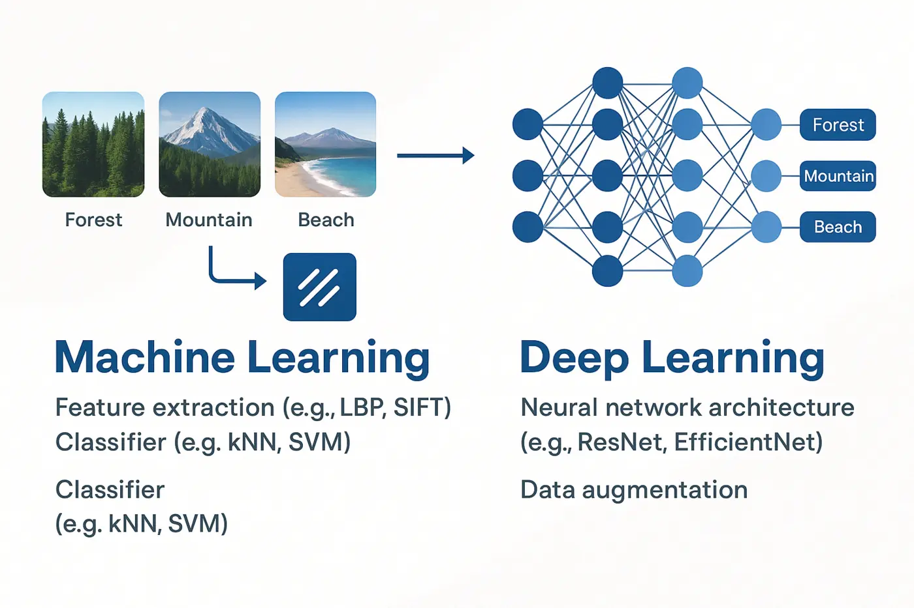
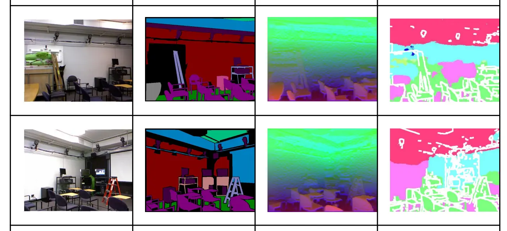
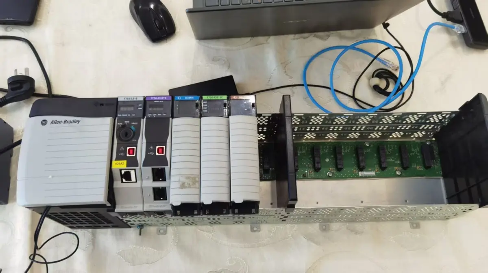

Robust vision-guided control
Combining probabilistic perception with adaptive control to handle uncertainty, occlusion, lighting variation and external disturbances.
Robotics researcher · Sydney, Australia
Master of Engineering Science in Robotics at UNSW, working across autonomous systems, computer vision, robust control and machine learning.
Research direction
Combining probabilistic perception with adaptive control to handle uncertainty, occlusion, lighting variation and external disturbances.
Exploring sample-efficient learning and simulation-to-reality transfer for controllers that generalise beyond a single test environment.
Designing lightweight perception and control pipelines that run on accessible hardware without external infrastructure.
Selected projects
A low-cost, infrastructure-independent landing system built with ROS 2 and Gazebo. A nested ArUco-marker perception strategy, nonlinear disturbance observer and adaptive SMC-based controller support precise landing under ground effect and lateral wind.
Autonomous mapping and shortest-path navigation using Flood Fill and BFS. PID motor control was tuned for stable movement across uneven maze surfaces, supported by full hardware assembly and system debugging.

Compared handcrafted-feature Random Forest models with fine-tuned ResNet18 and EfficientNet across 15 aerial scene categories.

Converted RGB-D input into HHA-encoded point clouds, built graph structures with KNN, and applied graph neural networks to indoor semantic segmentation.

Homography and ArUco calibration, custom inverse kinematics, artificial potential field path planning and RTDE control for precise pick-and-place.
Built a millisecond-level software SOE module for Logix5000 PLCs and Python routing algorithms for automotive PBS conveyor scheduling.
Background
Completed with an 86.5 WAM. Coursework includes Advanced Autonomous Systems, Control of Robotic Systems, Robust & Linear Control, Computer Vision and Robotics.
Developed event-recording logic, HMI data workflows and dynamic route scheduling for industrial control systems.
Built foundations in machine learning, operating systems, algorithms, natural language processing and intelligent robot simulation.
Third Prize, University-Level Programming Competition · Third-Class Scholarship
Contact
I am interested in research opportunities and collaborations in autonomous robotics, perception and robust control.
YitingLiang1122@outlook.com